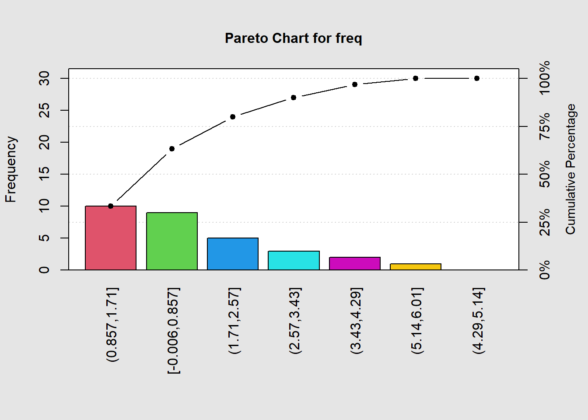
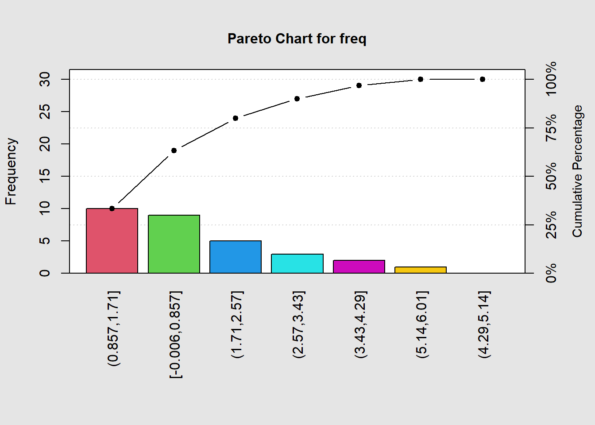

2 Análise Exploratória de Dados
Objetivos
Organizar e descrever conjuntos de dados;
Descrever tendências, medidas centrais e de variação;
Representar os dados graficamente.
2.1 Conceitos iniciais
Estatística, população, censo e amostra
A Estatística é a ciência que se ocupa da obtenção de informação (amostragem, planeamento de experiências), do seu tratamento inicial (ordenação, cálculo de características amostrais, agrupamentos em classes, construção de tabelas, representações gráficas) com a finalidade de inferir de uma amostra para a população (decisão sobre hipóteses, estimação de parâmetros populacionais) e eventualmente prever a evolução de um fenômeno (previsão).
Podemos afirma que a Estatística é a ciência que nos guia na tomada de decisões em situação de incerteza.
População designa o conjunto dos elementos cujas características (atributos) são objetos de um determinado estudo.
Os elementos da população são designados por unidades estatísticas.
Para conhecer de forma completa uma população tem de analisar-se todos os seus elementos, ou seja, realizar um censo.
O estudo das características da população pode ser feito sobre um subconjunto finito que se designa por amostra.
2.2 Análise Exploratória de Dados
Para que os dados sejam informativos, necessitamos organizá-los, resumi-los e apresentá-los de forma adequada. Este é o papel da estatística descritiva.
Na análise exploratória de dados, além de descrever os dados, buscamos conhecer algumas características do processo com base nos dados.
Com o uso adequado de tabelas, gráficos e medidas, podemos descobrir certas estruturas que não eram evidentes nos dados brutos.
A mineração de dados (data mining) significa a busca por relacionamentos não triviais, que podem estar escondidos em grandes massas de dados.
A mineração de dados aplica técnicas estatísticas e computacionais.
2.2.1 Dados e Variáveis
Depois de realizado um levantamento de dados, eles são colocados em arquivos, sob a forma de matrizes, em que:
As linhas correspondem ao que se observou em cada elemento pesquisado;
As colunas correspondem às características (variáveis) levantadas.
Os dados podem ser observações de variáveis qualitativas ou quantitativas.
Quantitativa: os possíveis resultados são números de certa escala.
Qualitativa: os possíveis resultados são atributos ou qualidades.

2.2.2 Classificação das Variáveis
Qualitativas ou categóricas: assumem um conjunto de categorias.
- Nominais: masculino/feminino, certo/errado.
- Ordinais: primeiro, segundo, … décimo.
Quantitativas: assumem um conjunto de valores numéricos que se apresentam numa escala de intensidades ou valores.
Discretas: podem tomar um número finito ou uma infinidade numerável de valores.
50; 10; 8; 70; ...Contínuas: podem tomar qualquer valor dentro de um intervalo de números reais.
3,1415...; 34,172; 75,36; ...
Ao observar os valores que essas características assumem (seja na amostra, seja em toda a população), definem-se as variáveis, uma para cada característica.
Perante uma amostra de dimensão \(n\), e representando-se uma variável por \(x\), tem-se \[ X_1, X_2, \dots X_n \]
em que \(x_i, (i = 1, \dots, n)\) é o valor da característica observada na \(i_{\text{ésima}}\) unidade estatística.
2.3 Preparação dos dados
As técnicas utilizadas para preparar os dados envolve o arranjo desses dados em subconjuntos que apresentem características similares.
- mesma idade, mesma finalidade, mesma faixa salarial, mesmo grau de instrução.
Os dados agrupados podem ser apresentados em tabelas e/ou gráficos para obter as estatísticas descritivas:
- média, mediana, desvio padrão…
A essa organização dos dados em grupos, classes, categorias, são chamados de distribuição de frequência.
2.3.1 Representação dos dados
Distribuição de Frequências:
Frequência absoluta (\(F_a\));
Frequência absoluta Acumulada (\(F_aA\));
Frequência relativa (\(F_r\));
Frequência relativa Acumulada (\(F_rA\)).
Representação gráfica:
- Histograma;
- Gráfico de Dispersão;
- Gráfico de colunas/barras;
- Gráfico de pizza.
2.3.2 Distribuição de frequência
Distribuição de frequência é o método de agrupar os dados em categorias para fornecer a quantidade ou percentagem dos dados em cada categoria.
Podemos resumir e visualizar um conjunto de dados sem a necessidade de levar em conta os valores individuais.
A distribuição de frequência pode ser relativa ou absoluta, podendo ser representada em gráficos ou tabelas.
A distribuição de frequência é utilizada para representar, de forma resumida, uma grande quantidade de dados para análise.
Exemplo 1: Análise de Variáveis Qualitativas/Categóricas
Numa pesquisa, levantou-se algumas características dos visitantes de um site, tais como o sexo, a idade, o nível de instrução e o provedor utilizado.
Consideraremos apenas uma amostra de 40 pessoas.
provedor <- c('C', 'A', 'B', 'B', 'C', 'B', 'D', 'B', 'B', 'A', 'C', 'A',
'B', 'D', 'A', 'B', 'B', 'C', 'D', 'B', 'B', 'A', 'A', 'B', 'A',
'A', 'B', 'D', 'D', 'C', 'A', 'A', 'B', 'C', 'B', 'D', 'B', 'B', 'B', 'C')- Realizar a distribuição de frequência absoluta com a função table (contar o número de ocorrência de cada provedor)
table(provedor).
## provedor
## A B C D
## 10 17 7 6- Gerar o gráfico de barras com a função barplot
barplot(table(provedor), col = 2:5).

- Gerar as distribuições de frequências e o gráfico com a função pareto.chart. Essa função gera um gráfico de barras com as frequências absolutas e um gráfico de linha com a frequência relativa acumulada, além de gerar uma tabela com as distribuições absoluta, absoluta acumulada, relativa e relativa acumulada.
| Frequency | Cum.Freq. | Percentage | Cum.Percent. | |
|---|---|---|---|---|
| B | 17 | 17 | 42.5 | 42.5 |
| A | 10 | 27 | 25.0 | 67.5 |
| C | 7 | 34 | 17.5 | 85.0 |
| D | 6 | 40 | 15.0 | 100.0 |
- Gerar o gráfico de Pareto
qcc::pareto.chart.
- Gerar o gráfico de pizza com a função pie.
2.3.3 Exercício 1: Análise Exploratória de Dados

Numa pesquisa de mercado para verificar a demanda da qualidade no desenvolvimento de um software, indagou-se qual dos seguintes itens era considerado mais importante:
| OP | VARIÁVEL | VALOR | OP | VARIÁVEL | VALOR |
|---|---|---|---|---|---|
| (a) | interface de fácil acesso | 8 | (b) | desempenho do sistema | 7 |
| (c) | métodos de análise avançados | 7 | (d) | método de custeio | 12 |
| (e) | manutenção e suporte | 2 | (f) | personalização | 4 |
| (g) | atualização em tempo real | 3 | (h) | confiabilidade das informações | 21 |
| (i) | segurança dos dados | 6 | (j) | uso de novas tecnologias de informática | 0 |
A variável demanda da qualidade no desenvolvimento de um software, operacionalizada de acordo com a pergunta, é qualitativa ou quantitativa?
Construa um gráfico (ou diagrama) que mostre a distribuição de frequências das respostas, priorizando os itens segundo a frequência de respostas.
Qual o nome que se dá a esse diagrama?
Exemplo 2: Distribuição de frequência
Neste exemplo serão analisadas as alturas de 18 alunos.
dados <- c(1.60, 1.69, 1.72, 1.73, 1.74, 1.75, 1.75, 1.75, 1.75, 1.75, 1.75, 1.76, 1.78, 1.80, 1.82, 1.83, 1.88, 1.90)
Tamanho da amostra
length(dados): \(n=\) 18Número de classes
ceiling(1 + 3.3 * log10(n)): \(k=\) 6Amplitude dos dados
diff(range(dados)): \(L=\) 0.3Amplitude da classe
L/k: \(h=\) 0.05Tabela de frequências:
(freq = table(cut(dados, breaks = k, include.lowest = T, right = T)))
##
## [1.6,1.65] (1.65,1.7] (1.7,1.75] (1.75,1.8] (1.8,1.85] (1.85,1.9]
## 1 1 9 3 2 2- Gráfico de barras:
barplot(freq, col = 2:7, xlab = "Classes", ylab = "Frequências")
- Tabela e gráfico de Pareto:
round(pareto.chart(data = freq, plot = T), 2)

##
## Pareto chart analysis for freq
## Frequency Cum.Freq. Percentage Cum.Percent.
## (1.7,1.75] 9.00 9.00 50.00 50.00
## (1.75,1.8] 3.00 12.00 16.67 66.67
## (1.8,1.85] 2.00 14.00 11.11 77.78
## (1.85,1.9] 2.00 16.00 11.11 88.89
## [1.6,1.65] 1.00 17.00 5.56 94.44
## (1.65,1.7] 1.00 18.00 5.56 100.002.3.4 Exercício 2: Análise Exploratória de Dados
## [1] 30## [1] 0## [1] 6## x
## 0 1 2 3 4 6
## 9 10 5 3 2 1##
##
## Cell Contents
## |-------------------------|
## | N |
## | N / Table Total |
## |-------------------------|
##
##
## Total Observations in Table: 30
##
##
## | 0 | 1 | 2 | 3 | 4 |
## |-----------|-----------|-----------|-----------|-----------|
## | 9 | 10 | 5 | 3 | 2 |
## | 0.300 | 0.333 | 0.167 | 0.100 | 0.067 |
## |-----------|-----------|-----------|-----------|-----------|
##
##
## | 6 |
## |-----------|
## | 1 |
## | 0.033 |
## |-----------|
##
##
##
## ##
## [-0.006,0.857] (0.857,1.71] (1.71,2.57] (2.57,3.43] (3.43,4.29]
## 9 10 5 3 2
## (4.29,5.14] (5.14,6.01]
## 0 1 

##
## Pareto chart analysis for freq
## Frequency Cum.Freq. Percentage Cum.Percent.
## (0.857,1.71] 10.00 10.00 33.33 33.33
## [-0.006,0.857] 9.00 19.00 30.00 63.33
## (1.71,2.57] 5.00 24.00 16.67 80.00
## (2.57,3.43] 3.00 27.00 10.00 90.00
## (3.43,4.29] 2.00 29.00 6.67 96.67
## (5.14,6.01] 1.00 30.00 3.33 100.00
## (4.29,5.14] 0.00 30.00 0.00 100.00Regras para determinar a quantidade de classes (k)
- Regra de Sturges (logaritmo)
\[k = 1 + 3,3 log_{10}(n)\]
- Regra da potência de base 2 (\(log_2\))
\[k = \text{ menor valor inteiro tal que } 2^k \geq n\]
- Regra da raiz quadrada
\[k=sqrt(n)\]
- Regra do bom senso
A quantidade de classes deve garantir observar a distribuição de valores.
2.4 Distribuição de frequência
Regra de Sturges (Logaritmo)
| Quantidade de Dados (n)} | Quantidade de Classes (k) |
|---|---|
| 1 | 1 |
| 2 | 2 |
| 3 a 5 | 3 |
| 6 a 11 | 4 |
| 12 a 23 | 5 |
| 24 a 46 | 6 |
| 47 a 93 | 7 |
| 94 a 187 | 8 |
| 188 a 376 | 9 |
| 377 a 756 | 10 |
Regra da Potência de 2
| Quantidade de Dados (n) | Quantidade de Classes (k) |
|---|---|
| 1 e 2 | 1 |
| 3 e 4 | 2 |
| 5 a 8 | 3 |
| 9 a 16 | 4 |
| 17 a 32 | 5 |
| 33 a 64 | 6 |
| 65 a 128 | 7 |
| 129 a 256 | 8 |
| 257 a 512 | 9 |
| 513 a 1024 | 10 |
Regra do BOM SENSO
| Quantidade de Dados (n) | Quantidade de Classes (k) mín-máx |
|---|---|
| até 50 | 5 a 10 |
| 51 a 100 | 8 a 16 |
| 101 a 200 | 10 a 20 |
| 201 a 300 | 12 a 24 |
| 301 a 500 | 15 a 30 |
| mais de 500 | 20 a 40 |
- No exemplo em estudo, temos: \(n = 18\)
2.4.1 Exemplo 2: Determinando as características da classe
Amplitude do conjunto de dados: \(L = x_{max} - x_{min}\)
Amplitude da classe: \(h = L / k\)
Limites das classes:
1ª classe: \(x_{min}\) até \(x_{min} + h\)
2ª classe: \(x_{min}+h\) até \(x_{min} + 2 * h\)
\(\dots\)
- kª classe: \(x_{min} + (k-1) * h \text{ até } x_{min} + k * h\)
Cálculos para a definição das classes:
\(n = 18\)
\(k = 1 + 3,3 * log10(18) = 5,14 ; k=6\)
\(L = 1,90 - 1,60 = 0,30; L = 0,30\)
\(h = 0,30 / 6 = 0,05; h = 0,05\)
\(min = 1,60\)
\(max = 1,90\)
Dados ordenados:
1,60 1,69 1,72 1,73 1,74 1,75 1,75 1,75 1,75 1,75 1,75 1,76 1,78 1,80 1,82 1,83 1,88 1,90
| Classes | Limites | Frequências |
|---|---|---|
| 1ª classe | \([1,60;1,65]\) | 1 |
| 2ª classe | \((1,65;1,70]\) | 1 |
| 3ª classe | \((1,70;1,75]\) | 9 |
| 4ª classe | \((1,75;1,80]\) | 3 |
| 5ª classe | \((1,80;1,85]\) | 2 |
| 6ª classe | \((1,85;1,90]\) | 2 |
Notação para indicar os limites das classes:
\([x, y)\) intervalo fechado em \(x\) e aberto em \(y\)
[x pertence ao intervalo, y não pertence ao intervalo).
Frequentemente temos que arredondar a amplitude das classes e, consequentemente, os limites das classes.
Sugere-se um ajuste simétrico nos limites das classes das pontas (primeira e última) nas quais a quantidade de dados pode ser menor.
Ponto médio das classes: \[x_k = L_{inferior} + (L_{superior}-L_{inferior})/2\]
Representação gráfica:
2.4.2 Organização dos dados - definições
O método experimental obriga recolher grandes quantidades de dados.
Não basta colecionar dados; é fundamental organizá-los, proceder ao seu tratamento, armazenamento e apresentação.
Perante uma coleção numerosa de dados, torna-se necessário recorrer às chamadas distribuições de frequências.
Comecemos por analisar o caso em que os valores de determinada característica podem ser descritos por uma variável discreta.
Ordenando os dados \(x_1, x_2, \dots , x_n\) por ordem crescente, obtém-se:
\[x_{(1)}, x_{(2)}, \dots, x_{(n)}\]
- em que \(x_{(i)}\) é a \(i_{\text{ésima}}\) observação ordenada por ordem crescente.
Tem-se, assim:
\(x_{(1)} = \qquad \qquad x_{(n)} =\)
2.4.3 Distribuições de frequências
Constrói-se a tabela de frequências:
| \(X_i\) | \(n_i\) | \(N_i\) | \(f_i\) | \(F_i\) |
|---|---|---|---|---|
| \(X_1\) | \(n_1\) | \(N_1\) | \(f_1\) | $ F_1$ |
| \(X_2\) | \(n_2\) | \(N_2\) | \(f_2\) | $ F_2$ |
| . | . | . | . | . |
| . | . | . | . | . |
| . | . | . | . | . |
| \(X_k\) | \(n_k\) | \(N_k=n\) | \(f_k\) | \(F_k=1\) |
| \(\Sigma^k_{i=1} n_i=n\) | \(\Sigma^k_{i=1}f_i=1\) |
2.4.4 Exercício 2: Análise Exploratória de Dados (R)
Ao longo de 30 dias registou-se o número de paragens por dia nos computadores de um centro de cálculo:
x <- c(1, 2, 0, 3, 2, 1, 1, 0, 6, 1, 0, 4, 0, 0, 3, 1, 1, 3, 0, 2, 1, 1, 1, 2, 1, 2, 4, 0, 0, 0)
Tem-se:
Dimensão da amostra
length(n): \(n =\) 30Menor observação
min(x): \(X_1 =\) 0Maior observação
max(x): \(X_{30} =\) 6
Tabelas de frequências e representação gráfica:
- Construindo a tabela de frequências, têm-se:
table(cut(x, breaks = 7, include.lowest = T, right = T)))
##
## [-0.006,0.857] (0.857,1.71] (1.71,2.57] (2.57,3.43] (3.43,4.29]
## 9 10 5 3 2
## (4.29,5.14] (5.14,6.01]
## 0 1A representação gráfica para o caso das frequências absolutas:
barplot(table(cut(x, breaks = 7, include.lowest = T, right = T)), col = 2:8, xlab = "Classes", ylab = "Frequências")
- Utilizando a função
qcc::pareto.chart:

##
## Pareto chart analysis for freq
## Frequency Cum.Freq. Percentage Cum.Percent.
## (0.857,1.71] 10.00 10.00 33.33 33.33
## [-0.006,0.857] 9.00 19.00 30.00 63.33
## (1.71,2.57] 5.00 24.00 16.67 80.00
## (2.57,3.43] 3.00 27.00 10.00 90.00
## (3.43,4.29] 2.00 29.00 6.67 96.67
## (5.14,6.01] 1.00 30.00 3.33 100.00
## (4.29,5.14] 0.00 30.00 0.00 100.002.5 Variável Contínua
Quando a variável \(x\) é de tipo contínua, o processo é um pouco mais elaborado, uma vez que não faz muito sentido falar em frequências absolutas e nem frequências relativas de valores isolados.
Neste caso, é necessário proceder à definição de classes de valores, à contagem das frequências absolutas e ao cálculo das frequências relativas de cada classe.
NOTA: Este procedimento é típico no caso de variáveis contínuas, mas usa-se também no caso de variáveis discretas quando estas assumem um grande número de valores.
Construção das Classes
As regras na construção das classes dependem da bibliografia seguida.
Nesta disciplina, seguir-se-ão estas regras, salvo indicação em contrário:
As classes não têm pontos em comum.
O número de classes é calculado usando a regra de Sturges:
\[\textit{nº de classes = inteiro-superior } (log_2 n) + 1\]
- Sempre que possível as classes devem ter igual amplitude, dada por:
\[\textit{ amplitude da classe } (h) = \frac{X_{n} - X_{1}}{\text{nº de classes}}\]
- Os intervalos são abertos à esquerda e fechados à direita. No entanto considerar o primeiro intercalo fechado à esquerda e à direita.
Exercício 3: Construção das Classes (R)
Uma universidade avalia o seu curso através de um questionário com 50 perguntas sobre diversos aspectos de interesse.
Cada pergunta tem uma resposta numa escala de 1 a 5.
Para cada aluno é encontrada a nota média e recorrendo a uma amostra de 42 alunos obteve-se:
x <- c(4.2, 2.7, 4.6, 2.5, 3.3, 4.7, 4.0, 2.4, 3.9, 1.2, 4.1, 4.0, 3.1, 2.4,
3.8, 3.8, 1.8, 4.5, 2.7, 2.2, 3.7, 2.2, 4.4, 2.8, 2.3, 1.9, 3.6, 3.9,
2.3, 3.4, 3.3, 1.8, 3.5, 4.1, 2.2, 3.0, 4.1, 3.4, 3.2, 2.2, 3.0, 2.8)Tabela de frequências
Tamanho da amostra
length(x): \(n=\) 42Amplitude dos dados
diff(range(x)): \(L =\) 3.5Número de classes
nclass.Sturges(x): \(k =\) 7Amplitude da classe
L/K: \(h =\) 0.05
1.2, 1.8, 1.8, 1.9, 2.2, 2.2, 2.2, 2.2, 2.3, 2.3, 2.4, 2.4, 2.5, 2.7, 2.7, 2.8, 2.8, 3, 3, 3.1, 3.2, 3.3, 3.3, 3.4, 3.4, 3.5, 3.6, 3.7, 3.8, 3.8, 3.9, 3.9, 4, 4, 4.1, 4.1, 4.1, 4.2, 4.4, 4.5, 4.6, 4.7
A Tabela de frequência pode ser obtida com freq = table(cut(x, breaks = k, include.lowest = TRUE, right = TRUE)) ou a indicação de Pareto (pareto.data <- round(qcc::pareto.chart(data = freq, plot = F, col = 2:8), 2)).
##
## [1.2,1.7] (1.7,2.2] (2.2,2.7] (2.7,3.2] (3.2,3.7] (3.7,4.2] (4.2,4.7]
## 1 7 7 6 7 10 4##
## Pareto chart analysis for freq
## Frequency Cum.Freq. Percentage Cum.Percent.
## (3.7,4.2] 10.00 10.00 23.81 23.81
## (1.7,2.2] 7.00 17.00 16.67 40.48
## (2.2,2.7] 7.00 24.00 16.67 57.14
## (3.2,3.7] 7.00 31.00 16.67 73.81
## (2.7,3.2] 6.00 37.00 14.29 88.10
## (4.2,4.7] 4.00 41.00 9.52 97.62
## [1.2,1.7] 1.00 42.00 2.38 100.00Representação gráfica
O gráfico para representar a distribuição de pode ser plotado utilizando ou a representação de Pareto

2.6 Diagrama de ramo e folha
Em um diagrama de ramo e folha, cada número é separado em um ramo e uma folha (por exemplo, se o número é \(4.2\), o dígito 4 formará o ramo e o dígito 2 formará a folha: \(4|2\)).
Você deve ter tantas folhas quanto a quantidade de valores no conjunto de dados original e estas devem ter um único dígito.
Um diagrama de ramo e folha é similar a um histograma, com a vantagem de o gráfico ainda conter os valores originais dos dados.
Outra vantagem de um diagrama de ramo e folha é que ele fornece uma maneira fácil de ordenar os dados.
É importante incluir uma chave para o diagrama de ramo e folha para identificar os valores dos dados, mostrando um valor representado por um ramo e uma folha.
O comando para exibir o diagrama de ramo e folha é .
##
## The decimal point is at the |
##
## 1 | 2
## 1 | 889
## 2 | 22223344
## 2 | 57788
## 3 | 00123344
## 3 | 5678899
## 4 | 0011124
## 4 | 567